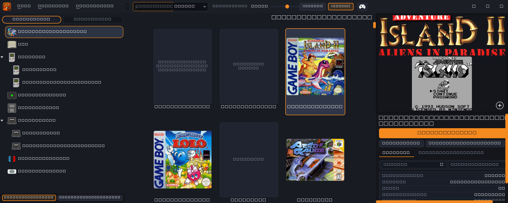
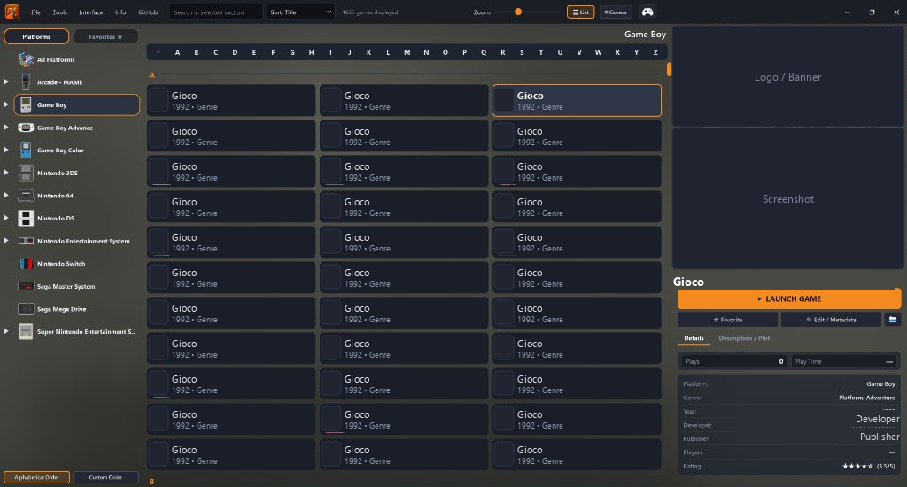
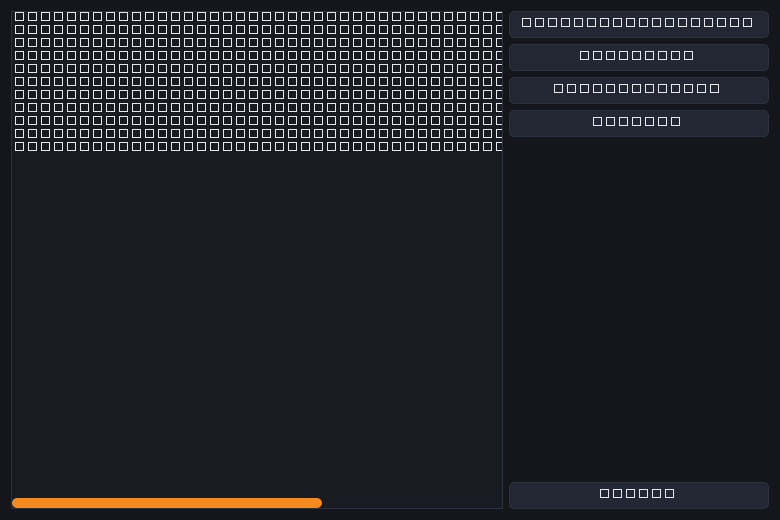
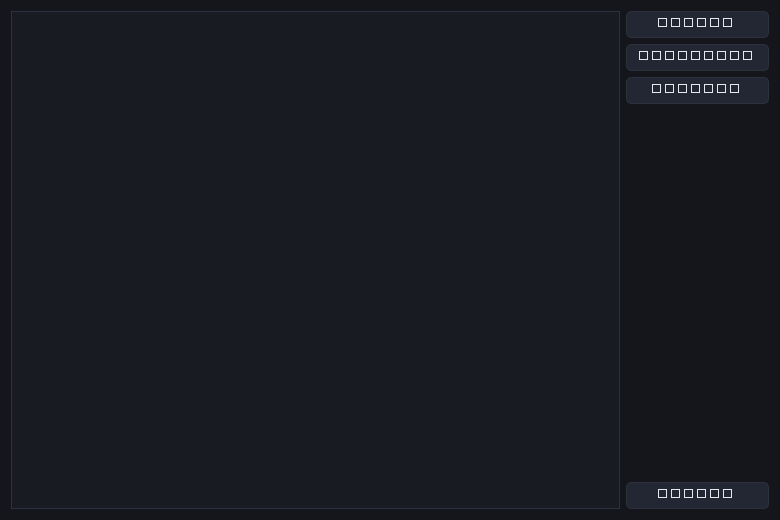
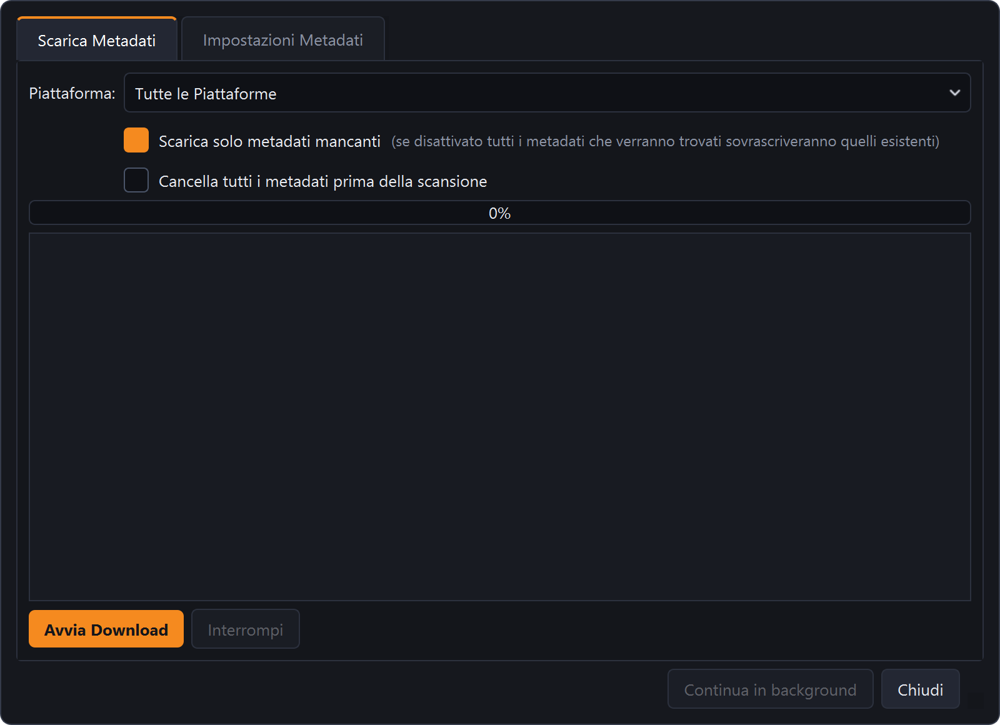
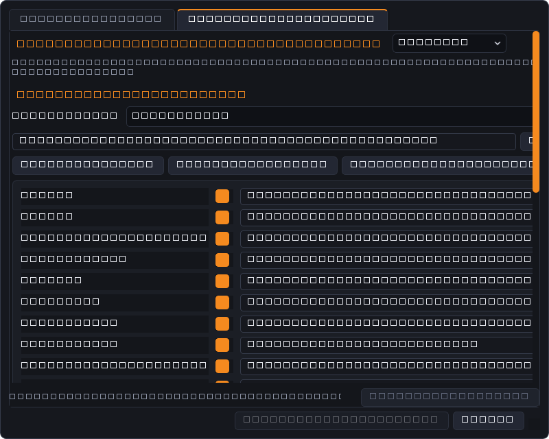
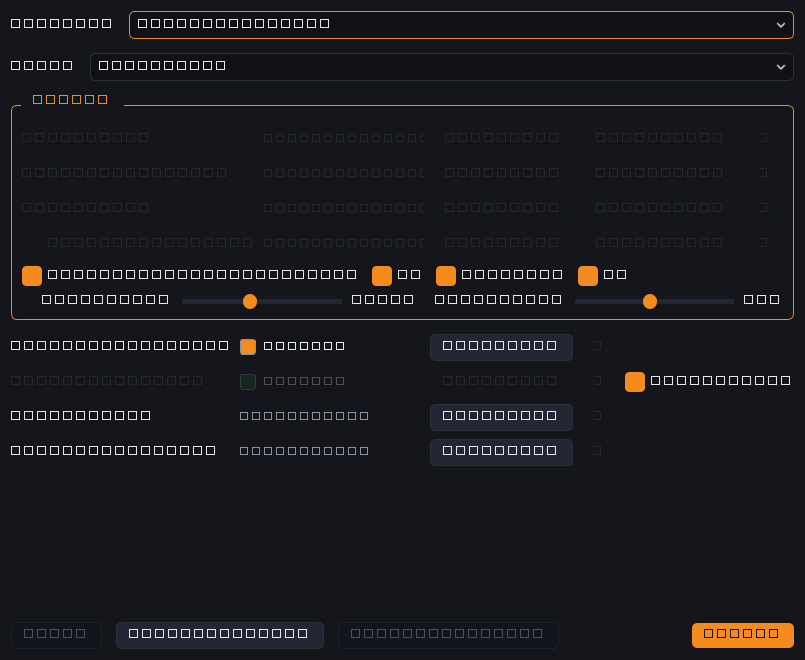
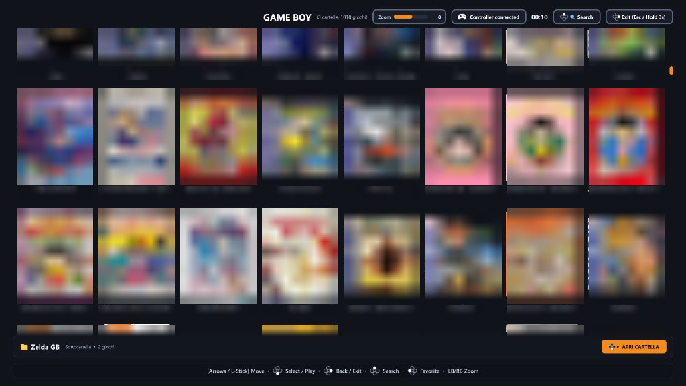

Benvenuto in EasyLauncher
Questa guida ti accompagna passo dopo passo dall'installazione zero fino a tutte le funzioni avanzate: configurazione di console ed emulatori, download automatico di copertine e screenshot extra, personalizzazione grafica completa e navigazione da divano con controller Xbox/XInput.
1 Primi Passi — Come Iniziare Subito
Se usi EasyLauncher per la prima volta, segui questi 5 passaggi fondamentali nell'ordine indicato per avere subito la tua libreria pronta e giocabile:
Crea una Piattaforma
Vai su File → Nuova Piattaforma… (oppure Strumenti → Gestisci Piattaforme…). Scegli il nome della console (es. Game Boy, Nintendo 64) e la cartella dove tieni le ROM: le estensioni dei file e l'icona vengono impostate in automatico (puoi comunque personalizzarle in seguito dalle opzioni avanzate).
Collega un Emulatore
Apri Strumenti → Gestisci Emulatori…, clicca Aggiungi, seleziona
l'eseguibile del tuo emulatore (es. retroarch.exe, dolphin.exe) e associalo alla piattaforma creata.
Scansiona le tue ROM
Clicca File → Scansiona tutte le cartelle ROM (oppure trascina direttamente i file ROM dentro la griglia centrale). I giochi compariranno subito nella libreria!
Scarica Copertine & Info
Apri Strumenti → Scarica Metadati e Copertine…, seleziona la piattaforma e premi Avvia. Anche senza chiavi API, il programma scarica automaticamente copertine, descrizioni e screenshot.
Avvia un Gioco!
Fai doppio click su una copertina (o su una riga nella vista lista), premi Invio oppure clicca il grande pulsante arancione ▶ AVVIA GIOCO a destra.
2 L'Interfaccia Principale a 3 Colonne
La finestra principale è divisa in tre colonne ridimensionabili e personalizzabili, più una barra superiore unificata.

Barra Superiore
- Menu File · Strumenti · Interfaccia · Info: accesso rapido a tutte le funzioni del programma.
- Cerca nella sezione selezionata: filtra istantaneamente i giochi per titolo mentre scrivi.
- Ordina: ordina per Titolo, Anno, Sviluppatore, Recenti o Valutazione.
- Zoom: ingrandisce o riduce le copertine (sia nella vista Copertine che nelle righe della vista Lista, memorizzando due valori separati!).
- ☰ Lista / ⊞ Copertine: passa tra la vista a copertine e la vista a lista a 3 colonne.
- Icona Controller (Pad): avvia subito la Modalità Schermo Intero (F11).
Vista ☰ Lista a 3 Colonne e Barra Alfabetica
Selezionando ☰ Lista, i giochi vengono mostrati in 3 colonne suddivise per lettera
iniziale (#, A, B, …). In alto compare una barra alfabetica: cliccando qualsiasi
lettera attiva salti subito alla sezione corrispondente.

Colonna Sinistra: Piattaforme, Sotto-cartelle e Preferiti ★
- Scheda Piattaforme: contiene Tutte le Piattaforme, le tue console principali e le eventuali sotto-cartelle personalizzate (es. collezioni Pokémon o Super Mario).
- Ordine Alfabetico vs Ordine personalizzato: i due pulsanti in fondo permettono di alternare tra ordine alfabetico automatico e ordine manuale. In Ordine personalizzato puoi trascinare le cartelle per riordinarle a piacimento; l'ordine manuale resta sempre salvato anche se passi temporaneamente all'ordine alfabetico.
- Scheda Preferiti ★: crea cartelle preferiti personalizzate (es. Da finire, Multiplayer) e organizzaci i giochi tramite tasto destro.
Colonna Destra: Media, Dettagli e Statistiche
- In alto: Logo/Banner del gioco e Screenshot gameplay. Se un gioco ha più screenshot, compaiono le frecce
◀/▶per sfogliarli e il tasto+in basso a destra per aggiungerne o gestirne altri. - Pulsanti rapidi: ▶ AVVIA GIOCO, ☆ Preferito, ✎ Modifica / Metadati e l'icona cartella per aprire la directory della ROM.
- Schede Dettagli / Descrizione: mostra partite giocate, tempo totale di gioco, metadati completi e trama (con pulsante per tradurre automaticamente la descrizione nella lingua dell'interfaccia).
3 Gestione Piattaforme ed Emulatori
Dal menu Strumenti → Gestisci Piattaforme… puoi creare, modificare, eliminare o aggiungere sotto-cartelle a qualsiasi console. Quando scegli una piattaforma predefinita, estensioni ROM e icona vengono compilate automaticamente (puoi comunque modificarle se necessario come opzione avanzata).

Configurare gli Emulatori
In Strumenti → Gestisci Emulatori… puoi aggiungere quanti emulatori desideri e impostare i parametri da riga di comando.

| Segnaposto | Significato | Esempio d'uso (RetroArch / Standalone) |
|---|---|---|
{rom} | Percorso completo del file ROM selezionato | -L cores\gambatte_libretro.dll "{rom}" |
{rom_dir} | Cartella che contiene la ROM | Utile per giochi PC/DOS o configurazioni per cartella |
{rom_name} | Nome del file ROM senza estensione | Utile per lanciare giochi tramite ID/nome |
4 Aggiungere, Modificare e Organizzare i Giochi
- Scansione automatica: File → Scansiona tutte le cartelle ROM controlla tutte le cartelle associate e importa automaticamente i nuovi titoli trovati.
- Drag & Drop: puoi trascinare uno o più file ROM direttamente da Esplora Risorse sulla griglia centrale (selezionando prima la piattaforma di destinazione).
- Aggiunta manuale: File → Aggiungi ROM manualmente… per aggiungere singoli file fuori dalle cartelle standard.
- Menu contestuale (Tasto Destro sul gioco): Avvia, Avvia con…, Modifica / Metadati (titolo, anno, genere, copertina, logo, screenshot extra), Sposta in sotto-cartella, Aggiungi/Rimuovi dai Preferiti, Apri cartella ROM, Rimuovi gioco dalla libreria.
5 Scaricare Metadati, Copertine e Foto Extra
EasyLauncher integra un motore multi-fonte accessibile da Strumenti → Scarica Metadati e Copertine….

Impostazioni Metadati & Screenshot Extra (per singola Piattaforma)
Nella seconda scheda Impostazioni Metadati puoi personalizzare tutto con precisione chirurgica:

- Fonti gratuite senza API Key: Libretro Thumbnails, LaunchBox GamesDB, ArcadeDB, Steam, GOG, Wikipedia, Wikidata, Nintendo.
- Fonti avanzate con API Key (opzionali): IGDB (Twitch), ScreenScraper, TheGamesDB, SteamGridDB. Nella stessa scheda trovi il pulsante 📖 Guida con le istruzioni passo-passo per ottenere le chiavi IGDB gratuite.
- Foto Gameplay Extra (0–3): accanto alla riga Screenshot puoi scegliere
Extra: 0,+1,+2o+3. Questa scelta è indipendente per ogni piattaforma. Durante la scansione il programma scarica la foto principale più fino a 3 foto extra controllando che siano tutte diverse tra loro (verifica sia URL che impronta SHA-256 del file).
6 Personalizzazione: Aspetto, Angoli e Finestre
Dal menu Interfaccia puoi trasformare completamente l'aspetto del programma:

- Aspetto…: scegli tra Tema Scuro e Tema Bianco (Chiaro), cambia il Colore selezione (es. arancione, verde, blu), attiva lo Sfondo sfocato dinamico (che adatta lo sfondo alla copertina del gioco selezionato) oppure imposta sfondi personalizzati per ciascuna delle 3 colonne e salva i tuoi Profili.
- Angoli arrotondati copertine e immagini…: regola separatamente con 3 slider allineati l'arrotondamento (
0–28 px) per Copertine giochi, Logo / Banner e Screenshot, con anteprima dal vivo e pulsante Ripristina Default (6). - Dimensione Finestre…: sblocca i divisori tra le colonne per ridimensionarle trascinando i bordi, poi ribloccale oppure premi Ripristina default per tornare alle proporzioni originali (ribloccando automaticamente i pannelli).
- Seleziona Lingua: cambia l'intera interfaccia (e i nuovi metadati) in Italiano, English, Français, Español o Deutsch. Al primo avvio il programma parte in English; la lingua scelta viene poi salvata per gli avvii successivi.
7 Modalità Schermo Intero (Controller / Pad)
Pensata per TV, cabinati o per giocare dal divano con un controller Xbox/XInput o con la tastiera. Puoi avviarla premendo F11, cliccando l'icona del gamepad bianco in alto a destra, oppure da File → Modalità Schermo Intero (Pad) (dove puoi anche spuntare Avvia in Modalità Schermo Intero).

| Tasto Pad (Xbox/XInput) | Tastiera | Azione |
|---|---|---|
| D-Pad / Stick SX | Frecce | Sposta la selezione tra piattaforme, giochi e dettagli |
| A | Invio | Entra nella piattaforma / Apri dettagli / Avvia gioco |
| B | Esc | Torna indietro (tieni premuto 3s per uscire dalla modalità) |
| Y | Click su 🔍 Cerca | All'interno di una piattaforma, apre la ricerca con tastiera virtuale navigabile da Pad |
| X | — | Aggiunge/rimuove dai Preferiti (con gestione cartelle da Pad) |
| LB / RB | Q / E o Pag↑ / Pag↓ | Zoom griglia giochi: riduce o aumenta copertine e titoli sempre giustificati a tutto schermo (da 8 giochi/riga di default fino a 3 allo zoom massimo, con barra indicatrice in alto); nei dettagli gioco sfoglia le foto gameplay |
8 Backup, Ripristino & Struttura Portable
In Strumenti → Backup e Ripristino… puoi creare un archivio completo delle tue configurazioni, del database e dei media (o ripristinarne uno precedente) in qualsiasi momento.
data/library.db— database SQLite con piattaforme, emulatori, giochi, statistiche e preferiti.data/config.json— tutte le impostazioni di interfaccia, profili aspetto, zoom, angoli e fonti metadati.media/— copertine, loghi e screenshot scaricati (inclusi gli extra).roms/&emulators/— cartelle consigliate per mantenere il setup 100% portable.
9 Scorciatoie da Tastiera & Domande Frequenti
| Scorciatoia | Funzione |
|---|---|
| F11 | Entra nella Modalità Schermo Intero (Pad) |
| Invio / Doppio Click | Avvia il gioco selezionato |
| Tasto Destro su gioco / piattaforma | Menu rapido (modifica, sposta, preferiti, apri cartella) |
| Esc (tieni 3s) | Esce dalla Modalità Schermo Intero e torna alla finestra normale |
Domande Frequenti
- La scansione non scarica gli screenshot extra? Verifica nelle Impostazioni Metadati di aver selezionato la piattaforma corretta in alto e impostato
Extra: +1/+2/+3, poi premi Salva Impostazioni prima di avviare la scansione. - Un gioco non parte? Controlla in Strumenti → Gestisci Emulatori… che l'eseguibile sia associato alla piattaforma e che i parametri contengano
{rom}(tra virgolette se il percorso ha spazi:"{rom}"). - Voglio spostare EasyLauncher su un altro PC: copia semplicemente l'intera cartella principale di EasyLauncher; tutti i percorsi relativi vengono risolti automaticamente.